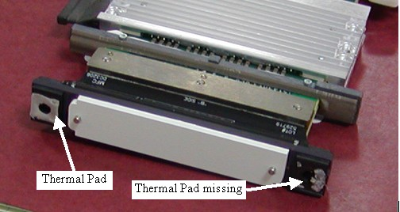
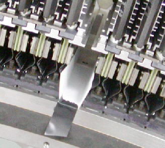
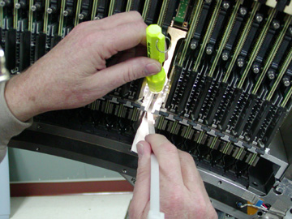

Operating Documentation
Direction 5193574-800, Rev# 22
LightSpeed 7.X Service Methods
Module Version 2.0, Version Date 10/24/08
Operating Documentation |
| Required Persons | Preliminary Reqs | Procedure | Finalization |
|---|---|---|---|
| 1 | Not Applicable | 30 mins | Not Applicable |
Digital Modules have two thermal pads by the diode that are in contact with the detector rails. These pads improve the heat transfer from the rails to the diode for temperature stability. A thermal pad may come off module during module replacement.
If the pad comes off on the front, it can be easily removed without any special process. If a pad comes off on the back rail of the detector however, a special process is required due to the limited amount of working space and the need to keep anything from getting into the detector collimator.
| Last Revised on: | February 22, 2007 |
| Item | Qty | Effectivity | Part# | Manufacturer | |
|---|---|---|---|---|---|
| Flashlight | 1 | - | - | - | |
| Item | Qty | Effectivity | Part# | Manufacturer |
|---|---|---|---|---|
| Clean Sheet of Paper | 1 | - | - | - |
| Tape (most any type) | 1 | - | - | - |
| Ty-wrap (cable tie) | AR | - | - | - |
| ||||
| Do not remove extra detector modules for access. This can increase the problem with modules that do not currently have any issues. | ||||
| ||||
| Do not use the Service vacuum without modifications noted in this procedure as any slip ring dust that gets into the detector will cause IQ issues and likely a detector replacement. | ||||
| Condition | Reference | Effectivity |
|---|---|---|
VCT Detector is open with the Digital Module removed | - | - |
Prepare a ty-wrap for use as a scraping tool by bending the ty-wrap end to form a hook, as shown in Illustration 1.
| NOTE: | See illustration for examples of two sizes of ty-wraps. The longer ty-wrap works better than the shorter one, since the thicker ty-wrap does not bend as easily during use. You may need to cut off the rounded end to have a flat scraping surface. |
Illustration 1: Ty-Wraps

If the thermal pad has partially come off and been left on the detector rail (Illustration 2), the missing piece must be removed before installing the new module using the following steps.
Illustration 2: Thermal Pads

| ||||
| Any pieces of thermal pad that get into the collimator plates will cause an artifact and may require detector replacement if they can't be removed by this procedure. | ||||
To ensure that no pieces of the thermal pad get into the detector collimator plates (Illustration 3), create a paper tray (Illustration 4).
Illustration 3: Detector Collimator Plates

Illustration 4: Paper Tray

| NOTE: | The paper tray should be cut and folded to have a 13mm (9/16 in.) wide base with approximately 20mm (7/8 in.) sides, and approximately 105mm (4 1/4 in.) long. Use the diode end of the removed digital module to help create the right size tray. Folding the tray about 1mm smaller than the diode width works well. |
Slide the paper tray into the open slot, making sure that the back edge is in front of the back rail.
Use any type of tape to hold the front in place. The tape keeps the paper tray from sliding out during thermal pad removal from the back rail (Illustration 5).
Illustration 5: Paper Tray Installed

| ||||
| If pieces of the thermal pad get onto the collimator plates, extreme care must be taken during removal, since damage to the collimator plates will require detector replacement. If the pad is sticking up, carefully grab it with needle-nose pliers. | ||||
With a flashlight for illumination of the work area, use the hook of the ty-wrap prepared earlier to scrape/pull the thermal pad off the back rail and onto the paper (Illustration 6).If the pad is loose, try to scoop it off with a flat ty-wrap. The paper tray will catch any parts and allow easy removal without dropping anything into the collimator plates.
Illustration 6: Thermal Pad Removal

| NOTE: | Using the service vacuum to remove pieces may cause problems, since any slipring dust that gets into the detector will cause IQ issues. An alternative suggestion is to use a drinking straw from the cafeteria as an extension to the vacuum hose to keep the hose away from the detector and pick off the thermal pad parts without damage to the collimator plates. |
Continue with new module installation.
No finalization steps.